Equations of a SpherePhương trình mặt cầu
Grade 12 · Topic: Coordinate Geometry in SpaceLớp 12 · Chủ đề: Phương pháp tọa độ trong không gian
1Lesson IntroductionGiới thiệu bài học
Learning goalsMục tiêu bài học
By the end of this lesson you can:
Sau bài học này, em có thể:
recognize the equation of a sphere and read its center and radius;
nhận biết phương trình mặt cầu, xác định tâm và bán kính;
write the equation of a sphere from given conditions (center and point, diameter, tangent plane);
viết phương trình mặt cầu khi biết tâm và một điểm, đường kính, tiếp diện;
decide the position of a point, a plane or a line relative to a sphere;
xét vị trí tương đối của điểm, mặt phẳng, đường thẳng với mặt cầu;
solve problems on tangency and cross-sections, including real situations.
giải bài toán về tiếp diện, đường tròn giao tuyến, kể cả tình huống thực tế.
2Mathematical VocabularyTừ vựng Toán học
sphere – the set of points \(M\) in space with \(IM=R\) (center \(I\), radius \(R\gt0\)).
mặt cầu – tập hợp các điểm \(M\) trong không gian có \(IM=R\) (tâm \(I\), bán kính \(R\gt0\)).
general equation of a sphere – \(x^2+y^2+z^2-2ax-2by-2cz+d=0\) with \(a^2+b^2+c^2-d\gt0\).
phương trình tổng quát của mặt cầu – \(x^2+y^2+z^2-2ax-2by-2cz+d=0\) với \(a^2+b^2+c^2-d\gt0\).
tangent plane – a plane with exactly one common point with the sphere; then \(d(I,(P))=R\).
tiếp diện – mặt phẳng có đúng một điểm chung với mặt cầu; khi đó \(d(I,(P))=R\).
cross-section circle – the circle where a plane cuts a sphere; radius \(r=\sqrt{R^2-d^2}\).
đường tròn giao tuyến – đường tròn là giao của mặt phẳng và mặt cầu; bán kính \(r=\sqrt{R^2-d^2}\).
3Useful English PhrasesCụm từ tiếng Anh thường gặp
The sphere has center \(I\) and radius three.
Mặt cầu có tâm \(I\), bán kính 3.
The distance from the center to the plane equals the radius.
Khoảng cách từ tâm đến mặt phẳng bằng bán kính.
The plane cuts the sphere along a circle.
Mặt phẳng cắt mặt cầu theo một đường tròn.
The point lies inside the sphere.
Điểm nằm trong mặt cầu.
Complete the squares.
Đưa về tổng các bình phương.
4Prerequisite ReviewÔn tập kiến thức nền
From Lesson 14–15: \(d(M,(P))=\dfrac{|Ax_0+By_0+Cz_0+D|}{\sqrt{A^2+B^2+C^2}}\); \(AB=\sqrt{(x_B-x_A)^2+(y_B-y_A)^2+(z_B-z_A)^2}\); midpoint \(\left(\dfrac{x_A+x_B}2;\dfrac{y_A+y_B}2;\dfrac{z_A+z_B}2\right)\); the foot of the perpendicular from \(I\) to \((P)\) is \(I+t\vec n\).
Từ Bài 14–15: \(d(M,(P))=\dfrac{|Ax_0+By_0+Cz_0+D|}{\sqrt{A^2+B^2+C^2}}\); \(AB=\sqrt{(x_B-x_A)^2+(y_B-y_A)^2+(z_B-z_A)^2}\); trung điểm \(\left(\dfrac{x_A+x_B}2;\dfrac{y_A+y_B}2;\dfrac{z_A+z_B}2\right)\); hình chiếu của \(I\) trên \((P)\) có dạng \(I+t\vec n\).
5TheoryLý thuyết
5.1 Equation of a spherePhương trình mặt cầu
Two formsHai dạng phương trình
Center \(I(a;b;c)\), radius \(R\): \[(x-a)^2+(y-b)^2+(z-c)^2=R^2.\]
Tâm \(I(a;b;c)\), bán kính \(R\): \[(x-a)^2+(y-b)^2+(z-c)^2=R^2.\]
\(x^2+y^2+z^2-2ax-2by-2cz+d=0\) is a sphere \(\iff a^2+b^2+c^2-d\gt0\); then \(I(a;b;c)\), \(R=\sqrt{a^2+b^2+c^2-d}\). (The coefficients of \(x^2,y^2,z^2\) must be equal and there are no \(xy,yz,zx\) terms.)
\(x^2+y^2+z^2-2ax-2by-2cz+d=0\) là mặt cầu \(\iff a^2+b^2+c^2-d\gt0\); khi đó \(I(a;b;c)\), \(R=\sqrt{a^2+b^2+c^2-d}\). (Hệ số của \(x^2,y^2,z^2\) bằng nhau và không có số hạng \(xy,yz,zx\).)
Point and sphereVị trí của điểm và mặt cầu
\(IM\lt R\): \(M\) is inside; \(IM=R\): \(M\) is on the sphere; \(IM\gt R\): \(M\) is outside.
\(IM\lt R\): \(M\) nằm trong; \(IM=R\): \(M\) nằm trên mặt cầu; \(IM\gt R\): \(M\) nằm ngoài.
5.2 Planes, lines and spheresVị trí tương đối của mặt phẳng, đường thẳng với mặt cầu
| \(d=d(I,(P))\)\(d=d(I,(P))\) | PositionVị trí | Common pointsĐiểm chung |
|---|---|---|
| \(d\gt R\) | no common pointkhông cắt nhau | nonekhông có |
| \(d=R\) | tangent (\((P)\) is a tangent plane)tiếp xúc (\((P)\) là tiếp diện) | one point: the foot \(H\) of the perpendicular from \(I\)một điểm: hình chiếu \(H\) của \(I\) trên \((P)\) |
| \(d\lt R\) | cut along a circlecắt theo một đường tròn | circle with center \(H\), radius \(r=\sqrt{R^2-d^2}\)đường tròn tâm \(H\), bán kính \(r=\sqrt{R^2-d^2}\) |
Line and sphereĐường thẳng và mặt cầu
Substitute the parametric equations into the sphere: a quadratic in \(t\) with 2, 1 or 0 roots \(\iff\) the line cuts the sphere at 2 points, is tangent, or misses it (equivalently \(d(I,\Delta)\lt R\), \(=R\), \(\gt R\)).
Thay phương trình tham số vào phương trình mặt cầu: được phương trình bậc hai theo \(t\) có 2, 1 hoặc 0 nghiệm \(\iff\) đường thẳng cắt mặt cầu tại 2 điểm, tiếp xúc hoặc không cắt (tương đương \(d(I,\Delta)\lt R\), \(=R\), \(\gt R\)).
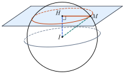
Watch out!Lưu ý
In \(x^2+y^2+z^2-4x+\ldots\) the center has \(a=2\) (half the coefficient, opposite sign). The right side of the standard form is \(R^2\), not \(R\). Always check \(a^2+b^2+c^2-d\gt0\) before calling an equation a sphere.
Trong \(x^2+y^2+z^2-4x+\ldots\) tâm có \(a=2\) (một nửa hệ số, đổi dấu). Vế phải của dạng chính tắc là \(R^2\), không phải \(R\). Luôn kiểm tra \(a^2+b^2+c^2-d\gt0\) trước khi kết luận là mặt cầu.
6Worked ExamplesVí dụ có lời giải
ExampleVí dụ 1BasicCơ bản – Center and radiusTâm và bán kính
Find the center and radius of
a) \((x-1)^2+(y+2)^2+z^2=9\);
b) \(x^2+y^2+z^2-4x+2y-6z+5=0\).
Tìm tâm và bán kính của mặt cầu
a) \((x-1)^2+(y+2)^2+z^2=9\);
b) \(x^2+y^2+z^2-4x+2y-6z+5=0\).
Analysis:
a) Read directly.
b) \(a,b,c\) are minus half the coefficients.
Phân tích:
a) Đọc trực tiếp.
b) \(a,b,c\) bằng âm một nửa các hệ số.
a) \(I(1;-2;0)\), \(R=\sqrt9=3\).
a) \(I(1;-2;0)\), \(R=\sqrt9=3\).
b) \(a=2\), \(b=-1\), \(c=3\), \(d=5\); \(R^2=4+1+9-5=9\).
b) \(a=2\), \(b=-1\), \(c=3\), \(d=5\); \(R^2=4+1+9-5=9\).
a) \(I(1;-2;0)\), \(R=3\);
b) \(I(2;-1;3)\), \(R=3\).
a) \(I(1;-2;0)\), \(R=3\);
b) \(I(2;-1;3)\), \(R=3\).
ExampleVí dụ 2BasicCơ bản – Writing equationsViết phương trình
a) Center \(I(1;2;-1)\), through \(A(3;0;0)\).
b) Diameter \(AB\) with \(A(2;-1;3)\), \(B(0;3;-1)\).
Viết phương trình mặt cầu:
a) tâm \(I(1;2;-1)\), đi qua \(A(3;0;0)\);
b) đường kính \(AB\) với \(A(2;-1;3)\), \(B(0;3;-1)\).
Analysis: \(R=IA\); for a diameter the center is the midpoint.
Phân tích: \(R=IA\); với đường kính, tâm là trung điểm.
a) \(R^2=IA^2=4+4+1=9\): \((x-1)^2+(y-2)^2+(z+1)^2=9\).
a) \(R^2=IA^2=4+4+1=9\): \((x-1)^2+(y-2)^2+(z+1)^2=9\).
b) \(I(1;1;1)\), \(R^2=IA^2=1+4+4=9\): \((x-1)^2+(y-1)^2+(z-1)^2=9\).
b) \(I(1;1;1)\), \(R^2=IA^2=1+4+4=9\): \((x-1)^2+(y-1)^2+(z-1)^2=9\).
a) \((x-1)^2+(y-2)^2+(z+1)^2=9\);
b) \((x-1)^2+(y-1)^2+(z-1)^2=9\).
a) \((x-1)^2+(y-2)^2+(z+1)^2=9\);
b) \((x-1)^2+(y-1)^2+(z-1)^2=9\).
ExampleVí dụ 3IntermediateTrung bình – A tangent planeMặt cầu tiếp xúc mặt phẳng
Write the sphere with center \(I(1;-2;3)\) tangent to \((P): 2x-y+2z-1=0\) and find the point of contact.
Viết phương trình mặt cầu tâm \(I(1;-2;3)\) tiếp xúc với \((P): 2x-y+2z-1=0\) và tìm tiếp điểm.
Analysis: \(R=d(I,(P))\); the contact point is the foot of the perpendicular.
Phân tích: \(R=d(I,(P))\); tiếp điểm là hình chiếu của \(I\) trên \((P)\).
\(R=\dfrac{|2+2+6-1|}{3}=3\): \((x-1)^2+(y+2)^2+(z-3)^2=9\).
\(R=\dfrac{|2+2+6-1|}{3}=3\): \((x-1)^2+(y+2)^2+(z-3)^2=9\).
\(H=I+t\vec n\): \(2(1+2t)-(-2-t)+2(3+2t)-1=0\iff9+9t=0\iff t=-1\), \(H(-1;-1;1)\).
\(H=I+t\vec n\): \(2(1+2t)-(-2-t)+2(3+2t)-1=0\iff9+9t=0\iff t=-1\), \(H(-1;-1;1)\).
\((x-1)^2+(y+2)^2+(z-3)^2=9\); contact point \(H(-1;-1;1)\).
\((x-1)^2+(y+2)^2+(z-3)^2=9\); tiếp điểm \(H(-1;-1;1)\).
ExampleVí dụ 4IntermediateTrung bình – A cross-sectionĐường tròn giao tuyến
Show that \((P): x+2y+2z+2=0\) cuts \((S): (x-1)^2+(y-1)^2+(z-2)^2=25\) along a circle; find its center and radius.
Chứng minh \((P): x+2y+2z+2=0\) cắt \((S): (x-1)^2+(y-1)^2+(z-2)^2=25\) theo một đường tròn; tìm tâm và bán kính đường tròn đó.
Analysis: Compare \(d(I,(P))\) with \(R\).
Phân tích: So sánh \(d(I,(P))\) với \(R\).
\(I(1;1;2)\), \(R=5\); \(d=\dfrac{|1+2+4+2|}{3}=3\lt5\): they cut.
\(I(1;1;2)\), \(R=5\); \(d=\dfrac{|1+2+4+2|}{3}=3\lt5\): cắt nhau.
\(r=\sqrt{25-9}=4\); center \(H=I-\vec n=(0;-1;0)\) (check: \(0-2+0+2=0\)).
\(r=\sqrt{25-9}=4\); tâm \(H=I-\vec n=(0;-1;0)\) (kiểm tra: \(0-2+0+2=0\)).
Circle with center \(H(0;-1;0)\) and radius 4.
Đường tròn tâm \(H(0;-1;0)\), bán kính 4.
ExampleVí dụ 5AdvancedNâng cao – Wi-Fi coverageVùng phủ sóng Wi-Fi
In a room (unit: m, floor \((Oxy)\)), a router at \(I(4;3;2)\) covers points at most 5 m away.
a) Write the boundary sphere.
b) Is the desk point \(D(1;1;1)\) covered?
c) On the floor, the covered region is a disc: find its radius.
Trong một phòng (đơn vị mét, sàn là \((Oxy)\)), bộ phát Wi-Fi đặt tại \(I(4;3;2)\) phủ sóng các điểm cách nó không quá 5 m.
a) Viết phương trình mặt cầu biên.
b) Điểm \(D(1;1;1)\) trên bàn có được phủ sóng không?
c) Trên sàn, vùng phủ sóng là một hình tròn: tìm bán kính.
Analysis: b) Compare \(ID\) with 5. c) The floor is the plane \(z=0\).
Phân tích: b) So sánh \(ID\) với 5. c) Sàn là mặt phẳng \(z=0\).
a) \((x-4)^2+(y-3)^2+(z-2)^2=25\).
a) \((x-4)^2+(y-3)^2+(z-2)^2=25\).
b) \(ID^2=9+4+1=14\lt25\): covered.
b) \(ID^2=9+4+1=14\lt25\): được phủ sóng.
c) \(d(I,(Oxy))=2\), \(r=\sqrt{25-4}=\sqrt{21}\approx4.58\) m.
c) \(d(I,(Oxy))=2\), \(r=\sqrt{25-4}=\sqrt{21}\approx4{,}58\) m.
a) \((x-4)^2+(y-3)^2+(z-2)^2=25\);
b) yes;
c) about 4.58 m.
a) \((x-4)^2+(y-3)^2+(z-2)^2=25\);
b) có;
c) khoảng 4,58 m.
7PracticeBài tập luyện tập
A. Multiple ChoiceA. Trắc nghiệm nhiều lựa chọn
Center and radius of \(x^2+y^2+z^2-2x+4y-4z+5=0\):
Tâm và bán kính của mặt cầu \(x^2+y^2+z^2-2x+4y-4z+5=0\) là…
Answer: c. \(R^2=a^2+b^2+c^2-d=4\).
Đáp án c. \(R^2=a^2+b^2+c^2-d=4\).
The sphere with center \(I(0;\,1;\,-1)\) through \(A(2;\,3;\,0)\):
Mặt cầu tâm \(I(0;\,1;\,-1)\) đi qua \(A(2;\,3;\,0)\) là…
Answer: d. \(R^2=IA^2=9\).
Đáp án d. \(R^2=IA^2=9\).
Position of \((S): (x-1)^2+y^2+(z-2)^2=9\) and \((P): x+2y+2z+1=0\):
Vị trí tương đối của \((S): (x-1)^2+y^2+(z-2)^2=9\) và \((P): x+2y+2z+1=0\):
Answer: d. \(d(I,(P))=2\), \(R=3\).
Đáp án d. \(d(I,(P))=2\), \(R=3\).
The sphere \((S)\) has center \(I(3;\,3;\,2)\) and is tangent to the plane \((Oxy)\) (see the figure). The equation of \((S)\) is…
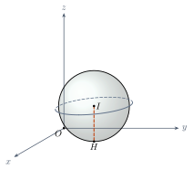
Mặt cầu \((S)\) có tâm \(I(3;\,3;\,2)\) và tiếp xúc với mặt phẳng \((Oxy)\) (xem hình). Phương trình của \((S)\) là…
Answer: a. \(R=d(I,(Oxy))=|z_I|=2\), so \(R^2=4\).
Đáp án a. \(R=d(I,(Oxy))=|z_I|=2\) nên \(R^2=4\).
The sphere with diameter \(AB\), where \(A(-4;\,2;\,5)\), \(B(0;\,4;\,1)\), is…
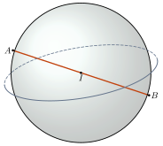
Mặt cầu đường kính \(AB\) với \(A(-4;\,2;\,5)\), \(B(0;\,4;\,1)\) là…
Answer: a. Center = midpoint \(I(-2;\,3;\,3)\) of \(AB\); \(R^2=\left(\dfrac{AB}{2}\right)^2=9\).
Đáp án a. Tâm là trung điểm \(I(-2;\,3;\,3)\) của \(AB\); \(R^2=\left(\dfrac{AB}{2}\right)^2=9\).
The sphere \((S')\) is symmetric to \((S): (x-3)^2+(y+2)^2+(z-3)^2=16\) with respect to the plane \((Oxy)\). Its equation is…
Mặt cầu \((S')\) đối xứng với \((S): (x-3)^2+(y+2)^2+(z-3)^2=16\) qua mặt phẳng \((Oxy)\). Phương trình của \((S')\) là…
Answer: b. The center \(I(3;\,-2;\,3)\) goes to \(I'(3;\,-2;\,-3)\); the radius stays \(4\).
Đáp án b. Tâm \(I(3;\,-2;\,3)\) biến thành \(I'(3;\,-2;\,-3)\); bán kính giữ nguyên bằng \(4\).
B. True or FalseB. Đúng hoặc sai
\(x^2+y^2+z^2-2x-4y+2z+7=0\) is the equation of a sphere.
\(x^2+y^2+z^2-2x-4y+2z+7=0\) là phương trình của một mặt cầu.
\(a^2+b^2+c^2-d=-1\).
\(a^2+b^2+c^2-d=-1\).
The point \(A(2;\,2;\,0)\) lies on \((x-1)^2+y^2+(z+2)^2=9\).
Điểm \(A(2;\,2;\,0)\) thuộc mặt cầu \((x-1)^2+y^2+(z+2)^2=9\).
\(IA^2=9\), \(R^2=9\).
\(IA^2=9\), \(R^2=9\).
The sphere \((x-4)^2+(y-4)^2+(z-2)^2=16\) (figure) is tangent to the plane \((Oxz)\).
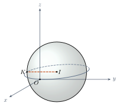
Mặt cầu \((x-4)^2+(y-4)^2+(z-2)^2=16\) (hình vẽ) tiếp xúc với mặt phẳng \((Oxz)\).
\(d(I,(Oxz))=|y_I|=4\), \(R=4\): tangent.
\(d(I,(Oxz))=|y_I|=4\), \(R=4\): tiếp xúc.
C. Short AnswerC. Trả lời ngắn
Find the radius of the sphere with center \(I(1;\,1;\,1)\) tangent to \((P): 2x+y+2z+4=0\).
Tìm bán kính mặt cầu tâm \(I(1;\,1;\,1)\) tiếp xúc với \((P): 2x+y+2z+4=0\).
Enter a number.
Nhập một số.
\(R=\dfrac{|9|}{3}=3\).
\(R=d(I,(P))=\dfrac{|9|}{3}=3\).
A ball of radius 10 cm is cut by a plane 6 cm from its center. Find the radius of the cut (cm).
Một quả cầu bán kính 10 cm bị cắt bởi mặt phẳng cách tâm 6 cm. Tính bán kính của mặt cắt (cm).
Enter a number.
Nhập một số.
\(r=\sqrt{R^2-d^2}=\sqrt{100-36}=8\).
\(r=\sqrt{R^2-d^2}=\sqrt{100-36}=8\).
Find \(m\) so that \(x^2+y^2+z^2-4x+6y-6z+m=0\) is a sphere of radius 4.
Tìm \(m\) để \(x^2+y^2+z^2-4x+6y-6z+m=0\) là phương trình mặt cầu bán kính 4.
Enter a number.
Nhập một số.
\(R^2=a^2+b^2+c^2-m\Rightarrow 16=22-m\Rightarrow m=6\).
\(R^2=a^2+b^2+c^2-m\Rightarrow 16=22-m\Rightarrow m=6\).
A. Multiple ChoiceA. Trắc nghiệm nhiều lựa chọn
Center and radius of \(x^2+y^2+z^2-4x-2y+6z+5=0\):
Tâm và bán kính của mặt cầu \(x^2+y^2+z^2-4x-2y+6z+5=0\) là…
Answer: c. \(R^2=a^2+b^2+c^2-d=9\).
Đáp án c. \(R^2=a^2+b^2+c^2-d=9\).
The sphere with center \(I(1;\,-1;\,2)\) through \(A(3;\,1;\,3)\):
Mặt cầu tâm \(I(1;\,-1;\,2)\) đi qua \(A(3;\,1;\,3)\) là…
Answer: d. \(R^2=IA^2=9\).
Đáp án d. \(R^2=IA^2=9\).
Position of \((S): x^2+(y-2)^2+(z+1)^2=16\) and \((P): 2x-y+2z+16=0\):
Vị trí tương đối của \((S): x^2+(y-2)^2+(z+1)^2=16\) và \((P): 2x-y+2z+16=0\):
Answer: b. \(d(I,(P))=4\), \(R=4\).
Đáp án b. \(d(I,(P))=4\), \(R=4\).
A ball with center \(I(4;\,1;\,3)\) rests on the floor \((Oxy)\) (see the figure). Its surface has the equation…
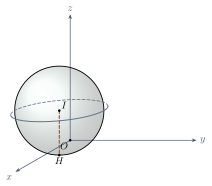
Một quả bóng tâm \(I(4;\,1;\,3)\) đặt trên sàn nhà \((Oxy)\) (xem hình). Mặt quả bóng có phương trình…
Answer: a. \(R=d(I,(Oxy))=|z_I|=3\), so \(R^2=9\).
Đáp án a. \(R=d(I,(Oxy))=|z_I|=3\) nên \(R^2=9\).
Find the equation of the sphere that has \(AB\) as a diameter, \(A(6;\,-5;\,5)\), \(B(0;\,-1;\,1)\).
Tìm phương trình mặt cầu nhận \(AB\) làm đường kính, \(A(6;\,-5;\,5)\), \(B(0;\,-1;\,1)\).
Answer: b. Center = midpoint \(I(3;\,-3;\,3)\) of \(AB\); \(R^2=\left(\dfrac{AB}{2}\right)^2=17\).
Đáp án b. Tâm là trung điểm \(I(3;\,-3;\,3)\) của \(AB\); \(R^2=\left(\dfrac{AB}{2}\right)^2=17\).
Find the image of the sphere \((x-1)^2+(y-2)^2+(z+2)^2=25\) under the reflection in the plane \((Oyz)\).
Tìm ảnh của mặt cầu \((x-1)^2+(y-2)^2+(z+2)^2=25\) qua phép đối xứng qua mặt phẳng \((Oyz)\).
Answer: b. The center \(I(1;\,2;\,-2)\) goes to \(I'(-1;\,2;\,-2)\); the radius stays \(5\).
Đáp án b. Tâm \(I(1;\,2;\,-2)\) biến thành \(I'(-1;\,2;\,-2)\); bán kính giữ nguyên bằng \(5\).
B. True or FalseB. Đúng hoặc sai
\(x^2+y^2+z^2-4x+2y+6=0\) is the equation of a sphere.
\(x^2+y^2+z^2-4x+2y+6=0\) là phương trình của một mặt cầu.
\(a^2+b^2+c^2-d=-1\).
\(a^2+b^2+c^2-d=-1\).
The point \(A(3;\,5;\,2)\) lies on \(x^2+(y-1)^2+(z-1)^2=25\).
Điểm \(A(3;\,5;\,2)\) thuộc mặt cầu \(x^2+(y-1)^2+(z-1)^2=25\).
\(IA^2=26\), \(R^2=25\).
\(IA^2=26\), \(R^2=25\).
The plane \((Oxz)\) touches the sphere \((x-3)^2+(y-3)^2+(z-2)^2=25\) shown in the figure.
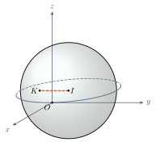
Mặt phẳng \((Oxz)\) tiếp xúc với mặt cầu \((x-3)^2+(y-3)^2+(z-2)^2=25\) trong hình.
\(d(I,(Oxz))=|y_I|=3\), \(R=5\): not tangent.
\(d(I,(Oxz))=|y_I|=3\), \(R=5\): không tiếp xúc.
C. Short AnswerC. Trả lời ngắn
Find the radius of the sphere with center \(I(2;\,-1;\,0)\) tangent to \((P): x-2y+2z+5=0\).
Tìm bán kính mặt cầu tâm \(I(2;\,-1;\,0)\) tiếp xúc với \((P): x-2y+2z+5=0\).
Enter a number.
Nhập một số.
\(R=\dfrac{|9|}{3}=3\).
\(R=d(I,(P))=\dfrac{|9|}{3}=3\).
A ball of radius 13 cm is cut by a plane 5 cm from its center. Find the radius of the cut (cm).
Một quả cầu bán kính 13 cm bị cắt bởi mặt phẳng cách tâm 5 cm. Tính bán kính của mặt cắt (cm).
Enter a number.
Nhập một số.
\(r=\sqrt{R^2-d^2}=\sqrt{169-25}=12\).
\(r=\sqrt{R^2-d^2}=\sqrt{169-25}=12\).
The equation \(x^2+y^2+z^2+6x+4y+m=0\) describes a sphere with radius \(R=3\). Find \(m\).
Phương trình \(x^2+y^2+z^2+6x+4y+m=0\) là mặt cầu có bán kính \(R=3\). Tìm \(m\).
Enter a number.
Nhập một số.
\(R^2=a^2+b^2+c^2-m\Rightarrow 9=13-m\Rightarrow m=4\).
\(R^2=a^2+b^2+c^2-m\Rightarrow 9=13-m\Rightarrow m=4\).
A. Multiple ChoiceA. Trắc nghiệm nhiều lựa chọn
Center and radius of \(x^2+y^2+z^2+2x-6y-2z-5=0\):
Tâm và bán kính của mặt cầu \(x^2+y^2+z^2+2x-6y-2z-5=0\) là…
Answer: c. \(R^2=a^2+b^2+c^2-d=16\).
Đáp án c. \(R^2=a^2+b^2+c^2-d=16\).
The sphere with center \(I(2;\,0;\,1)\) through \(A(0;\,1;\,3)\):
Mặt cầu tâm \(I(2;\,0;\,1)\) đi qua \(A(0;\,1;\,3)\) là…
Answer: d. \(R^2=IA^2=9\).
Đáp án d. \(R^2=IA^2=9\).
Position of \((S): (x-1)^2+(y-1)^2+(z-1)^2=4\) and \((P): 2x+y-2z+8=0\):
Vị trí tương đối của \((S): (x-1)^2+(y-1)^2+(z-1)^2=4\) và \((P): 2x+y-2z+8=0\):
Answer: a. \(d(I,(P))=3\), \(R=2\).
Đáp án a. \(d(I,(P))=3\), \(R=2\).
The sphere with center \(I(1;\,3;\,2)\) touching the plane \((Oxy)\) at \(H\) (figure) is…
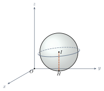
Mặt cầu tâm \(I(1;\,3;\,2)\) tiếp xúc với mặt phẳng \((Oxy)\) tại \(H\) (hình vẽ) là…
Answer: a. \(R=d(I,(Oxy))=|z_I|=2\), so \(R^2=4\).
Đáp án a. \(R=d(I,(Oxy))=|z_I|=2\) nên \(R^2=4\).
Given \(A(-2;\,-4;\,-2)\) and \(B(4;\,-2;\,2)\), the sphere with diameter \(AB\) (figure) has the equation…
Cho \(A(-2;\,-4;\,-2)\), \(B(4;\,-2;\,2)\). Mặt cầu đường kính \(AB\) (hình vẽ) có phương trình…
Answer: b. Center = midpoint \(I(1;\,-3;\,0)\) of \(AB\); \(R^2=\left(\dfrac{AB}{2}\right)^2=14\).
Đáp án b. Tâm là trung điểm \(I(1;\,-3;\,0)\) của \(AB\); \(R^2=\left(\dfrac{AB}{2}\right)^2=14\).
The sphere \((S): (x-3)^2+(y+1)^2+(z-1)^2=16\) is reflected through the origin \(O\). The new sphere is…
Lấy đối xứng mặt cầu \((S): (x-3)^2+(y+1)^2+(z-1)^2=16\) qua gốc tọa độ \(O\). Mặt cầu nhận được là…
Answer: b. The center \(I(3;\,-1;\,1)\) goes to \(I'(-3;\,1;\,-1)\); the radius stays \(4\).
Đáp án b. Tâm \(I(3;\,-1;\,1)\) biến thành \(I'(-3;\,1;\,-1)\); bán kính giữ nguyên bằng \(4\).
B. True or FalseB. Đúng hoặc sai
\(x^2+y^2+z^2-6x+2z+9=0\) is the equation of a sphere.
\(x^2+y^2+z^2-6x+2z+9=0\) là phương trình của một mặt cầu.
\(a^2+b^2+c^2-d=1\).
\(a^2+b^2+c^2-d=1\).
The point \(A(4;\,0;\,3)\) lies on \((x-2)^2+(y+1)^2+(z-1)^2=9\).
Điểm \(A(4;\,0;\,3)\) thuộc mặt cầu \((x-2)^2+(y+1)^2+(z-1)^2=9\).
\(IA^2=9\), \(R^2=9\).
\(IA^2=9\), \(R^2=9\).
The sphere \((S): (x-1)^2+(y-4)^2+(z-3)^2=16\) and the plane \((Oxz)\) have exactly one common point.
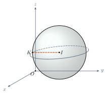
Mặt cầu \((S): (x-1)^2+(y-4)^2+(z-3)^2=16\) và mặt phẳng \((Oxz)\) có đúng một điểm chung.
\(d(I,(Oxz))=|y_I|=4\), \(R=4\): tangent.
\(d(I,(Oxz))=|y_I|=4\), \(R=4\): tiếp xúc.
C. Short AnswerC. Trả lời ngắn
Find the radius of the sphere with center \(I(0;\,2;\,-1)\) tangent to \((P): 2x+2y-z+13=0\).
Tìm bán kính mặt cầu tâm \(I(0;\,2;\,-1)\) tiếp xúc với \((P): 2x+2y-z+13=0\).
Enter a number.
Nhập một số.
\(R=\dfrac{|18|}{3}=6\).
\(R=d(I,(P))=\dfrac{|18|}{3}=6\).
A ball of radius 17 cm is cut by a plane 8 cm from its center. Find the radius of the cut (cm).
Một quả cầu bán kính 17 cm bị cắt bởi mặt phẳng cách tâm 8 cm. Tính bán kính của mặt cắt (cm).
Enter a number.
Nhập một số.
\(r=\sqrt{R^2-d^2}=\sqrt{289-64}=15\).
\(r=\sqrt{R^2-d^2}=\sqrt{289-64}=15\).
For which value of \(m\) does \(x^2+y^2+z^2+2x+m=0\) have radius 2?
Với giá trị nào của \(m\) thì \(x^2+y^2+z^2+2x+m=0\) có bán kính bằng 2?
Enter a number.
Nhập một số.
\(R^2=a^2+b^2+c^2-m\Rightarrow 4=1-m\Rightarrow m=-3\).
\(R^2=a^2+b^2+c^2-m\Rightarrow 4=1-m\Rightarrow m=-3\).
D. Self-practice: Multiple ChoiceD. Tự luyện: trắc nghiệm
The box \(OABC.O'A'B'C'\) has \(A(6;0;0)\), \(C(0;6;0)\), \(O'(0;0;4)\) (figure). The sphere through all eight vertices is…
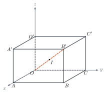
Hình hộp chữ nhật \(OABC.O'A'B'C'\) có \(A(6;0;0)\), \(C(0;6;0)\), \(O'(0;0;4)\) (hình vẽ). Mặt cầu đi qua cả tám đỉnh là…
Answer: c. The center is the midpoint \(I(3;\,3;\,2)\) of the diagonal \(OB'\); \(R^2=\dfrac{OB'^2}{4}=\dfrac{88}{4}=22\).
Đáp án c. Tâm là trung điểm \(I(3;\,3;\,2)\) của đường chéo \(OB'\); \(R^2=\dfrac{OB'^2}{4}=\dfrac{88}{4}=22\).
A sphere of radius 2 lies in the region \(x,y,z\ge0\) and is tangent to the three coordinate planes (figure). Its equation is…
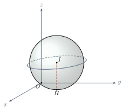
Mặt cầu bán kính 2 nằm trong miền \(x,y,z\ge0\) và tiếp xúc với ba mặt phẳng tọa độ (hình vẽ). Phương trình của mặt cầu là…
Answer: c. The distance from \(I\) to each coordinate plane is \(R=2\), so \(I(2;\,2;\,2)\).
Đáp án c. Khoảng cách từ \(I\) đến mỗi mặt phẳng tọa độ đều bằng \(R=2\) nên \(I(2;\,2;\,2)\).
\(M\) moves on the sphere \((x-1)^2+(y+2)^2+z^2=25\) and \(A(3;\,-5;\,-6)\) (figure). The largest possible length \(AM\) is…
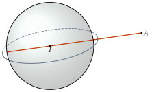
\(M\) thay đổi trên mặt cầu \((x-1)^2+(y+2)^2+z^2=25\) và \(A(3;\,-5;\,-6)\) (hình vẽ). Độ dài lớn nhất của \(AM\) là…
Answer: c. \(IA=7\gt R=5\); max \(AM=IA+R=12\).
Đáp án c. \(IA=7\gt R=5\); \(AM\) lớn nhất \(=IA+R=12\).
A student solved: Step 1: \(x^2+y^2+z^2+2x-6y+4z+10=0\Leftrightarrow (x-1)^2+(y+3)^2+(z-2)^2=4\). Step 2: center \(I(1;\,-3;\,2)\), radius \(R=2\). Which comment is correct?
Một bạn giải: Bước 1: \(x^2+y^2+z^2+2x-6y+4z+10=0\Leftrightarrow (x-1)^2+(y+3)^2+(z-2)^2=4\). Bước 2: tâm \(I(1;\,-3;\,2)\), bán kính \(R=2\). Nhận xét nào đúng?
Answer: d. \(-2ax\) with \(-2a=2\) gives \(a=-1\): \((x+1)^2+(y-3)^2+(z+2)^2=4\).
Đáp án d. \(-2ax\) với \(-2a=2\) cho \(a=-1\): \((x+1)^2+(y-3)^2+(z+2)^2=4\).
The sphere \((x-4)^2+(y-1)^2+(z-2)^2=9\) cuts the axis \(Ox\) at \(M\) and \(N\); \(K\) is the foot of the perpendicular from the center \(I\) to \(Ox\) (figure). Then \(MN=\)…
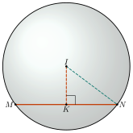
Mặt cầu \((x-4)^2+(y-1)^2+(z-2)^2=9\) cắt trục \(Ox\) tại \(M\), \(N\); \(K\) là hình chiếu của tâm \(I\) trên \(Ox\) (hình vẽ). Khi đó \(MN=\)…
Answer: b. \(d(I,Ox)=\sqrt{1^2+2^2}\), \(MN=2\sqrt{R^2-d^2}=2\sqrt{9-5}=4\).
Đáp án b. \(d(I,Ox)=\sqrt{1^2+2^2}\), \(MN=2\sqrt{R^2-d^2}=2\sqrt{9-5}=4\).
Two balls touch each other from outside (figure). The first is \(x^2+(y+1)^2+(z+1)^2=1\); the second has center \(J(-2;\,-2;\,1)\). Its radius is…
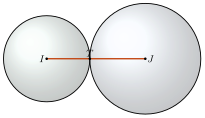
Hai quả cầu tiếp xúc ngoài với nhau (hình vẽ). Quả thứ nhất là \(x^2+(y+1)^2+(z+1)^2=1\); quả thứ hai có tâm \(J(-2;\,-2;\,1)\). Bán kính quả thứ hai là…
Answer: d. \(IJ=3=R_1+R_2\Rightarrow R_2=3-1=2\).
Đáp án d. \(IJ=3=R_1+R_2\Rightarrow R_2=3-1=2\).
The point \(A(2;\,-8;\,-10)\) lies on the sphere \(x^2+(y-2)^2+(z-1)^2=225\). The tangent plane to the sphere at \(A\) is…
Điểm \(A(2;\,-8;\,-10)\) thuộc mặt cầu \(x^2+(y-2)^2+(z-1)^2=225\). Tiếp diện của mặt cầu tại \(A\) là…
Answer: c. Normal vector \(\overrightarrow{IA}=(2;\,-10;\,-11)\), the plane passes through \(A\): \(2x-10y-11z-194=0\).
Đáp án c. Vectơ pháp tuyến \(\overrightarrow{IA}=(2;\,-10;\,-11)\), mặt phẳng đi qua \(A\): \(2x-10y-11z-194=0\).
Find \(m\) so that the plane \((P): x+2y+2z+m=0\) is tangent to \((S): (x+2)^2+(y-2)^2+z^2=1\).
Tìm \(m\) để mặt phẳng \((P): x+2y+2z+m=0\) tiếp xúc với \((S): (x+2)^2+(y-2)^2+z^2=1\).
Answer: c. \(d(I,(P))=\dfrac{|2+m|}{3}=1\Leftrightarrow m=1\) or \(m=-5\).
Đáp án c. \(d(I,(P))=\dfrac{|2+m|}{3}=1\Leftrightarrow m=1\) hoặc \(m=-5\).
D. Self-practice: Multiple ChoiceD. Tự luyện: trắc nghiệm
Find the sphere circumscribed about the box \(OABC.O'A'B'C'\) with \(A(4;0;0)\), \(C(0;2;0)\), \(O'(0;0;4)\).
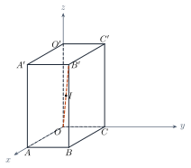
Tìm mặt cầu ngoại tiếp hình hộp chữ nhật \(OABC.O'A'B'C'\) với \(A(4;0;0)\), \(C(0;2;0)\), \(O'(0;0;4)\).
Answer: a. The center is the midpoint \(I(2;\,1;\,2)\) of the diagonal \(OB'\); \(R^2=\dfrac{OB'^2}{4}=\dfrac{36}{4}=9\).
Đáp án a. Tâm là trung điểm \(I(2;\,1;\,2)\) của đường chéo \(OB'\); \(R^2=\dfrac{OB'^2}{4}=\dfrac{36}{4}=9\).
A ball of radius 3 sits in the corner of a room: it touches the floor \((Oxy)\) and the two walls \((Oxz)\), \((Oyz)\) (figure). The equation of its surface is…
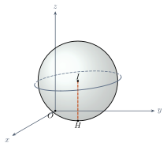
Một quả bóng bán kính 3 nằm ở góc phòng: tiếp xúc với sàn \((Oxy)\) và hai bức tường \((Oxz)\), \((Oyz)\) (hình vẽ). Phương trình mặt quả bóng là…
Answer: a. The distance from \(I\) to each coordinate plane is \(R=3\), so \(I(3;\,3;\,3)\).
Đáp án a. Khoảng cách từ \(I\) đến mỗi mặt phẳng tọa độ đều bằng \(R=3\) nên \(I(3;\,3;\,3)\).
\(M\) is a point of \((S): (x+1)^2+(y+1)^2+(z-1)^2=4\); \(A(-2;\,1;\,-1)\). The shortest distance \(AM\) is…
\(M\) là điểm thuộc \((S): (x+1)^2+(y+1)^2+(z-1)^2=4\); \(A(-2;\,1;\,-1)\). Khoảng cách \(AM\) nhỏ nhất là…
Answer: b. \(IA=3\gt R=2\); min \(AM=IA-R=1\).
Đáp án b. \(IA=3\gt R=2\); \(AM\) nhỏ nhất \(=IA-R=1\).
A student solved: Step 1: \(x^2+y^2+z^2+6x+2y-2z+2=0\Leftrightarrow (x-3)^2+(y-1)^2+(z+1)^2=9\). Step 2: center \(I(3;\,1;\,-1)\), radius \(R=3\). Which comment is correct?
Một bạn giải: Bước 1: \(x^2+y^2+z^2+6x+2y-2z+2=0\Leftrightarrow (x-3)^2+(y-1)^2+(z+1)^2=9\). Bước 2: tâm \(I(3;\,1;\,-1)\), bán kính \(R=3\). Nhận xét nào đúng?
Answer: d. \(-2ax\) with \(-2a=6\) gives \(a=-3\): \((x+3)^2+(y+1)^2+(z-1)^2=9\).
Đáp án d. \(-2ax\) với \(-2a=6\) cho \(a=-3\): \((x+3)^2+(y+1)^2+(z-1)^2=9\).
Find the length of the chord cut on the \(x\)-axis by \((S): (x-7)^2+(y-1)^2+(z-2)^2=9\).
Tìm độ dài dây cung mà trục \(Ox\) cắt trên \((S): (x-7)^2+(y-1)^2+(z-2)^2=9\).
Answer: d. \(d(I,Ox)=\sqrt{1^2+2^2}\), \(MN=2\sqrt{R^2-d^2}=2\sqrt{9-5}=4\).
Đáp án d. \(d(I,Ox)=\sqrt{1^2+2^2}\), \(MN=2\sqrt{R^2-d^2}=2\sqrt{9-5}=4\).
The sphere with center \(J(-7;\,-2;\,5)\) is tangent externally to \((S): x^2+(y-2)^2+(z-1)^2=36\). Its radius is…
Mặt cầu tâm \(J(-7;\,-2;\,5)\) tiếp xúc ngoài với \((S): x^2+(y-2)^2+(z-1)^2=36\). Bán kính của mặt cầu đó là…
Answer: d. \(IJ=9=R_1+R_2\Rightarrow R_2=9-6=3\).
Đáp án d. \(IJ=9=R_1+R_2\Rightarrow R_2=9-6=3\).
Write the equation of the plane tangent to \((S): (x+1)^2+(y-1)^2+(z-2)^2=49\) at \(A(5;\,4;\,4)\).
Viết phương trình mặt phẳng tiếp xúc với \((S): (x+1)^2+(y-1)^2+(z-2)^2=49\) tại \(A(5;\,4;\,4)\).
Answer: b. Normal vector \(\overrightarrow{IA}=(6;\,3;\,2)\), the plane passes through \(A\): \(6x+3y+2z-50=0\).
Đáp án b. Vectơ pháp tuyến \(\overrightarrow{IA}=(6;\,3;\,2)\), mặt phẳng đi qua \(A\): \(6x+3y+2z-50=0\).
The plane \(2x+2y-z+m=0\) touches the sphere \((x+2)^2+(y-1)^2+(z-2)^2=9\) exactly when…
Mặt phẳng \(2x+2y-z+m=0\) tiếp xúc với mặt cầu \((x+2)^2+(y-1)^2+(z-2)^2=9\) khi và chỉ khi…
Answer: d. \(d(I,(P))=\dfrac{|-4+m|}{3}=3\Leftrightarrow m=13\) or \(m=-5\).
Đáp án d. \(d(I,(P))=\dfrac{|-4+m|}{3}=3\Leftrightarrow m=13\) hoặc \(m=-5\).
D. Self-practice: Multiple ChoiceD. Tự luyện: trắc nghiệm
A box-shaped room \(OABC.O'A'B'C'\) has \(A(6;0;0)\), \(C(0;4;0)\), \(O'(0;0;4)\) (in m). The sphere passing through its eight corners is…
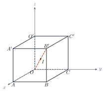
Một căn phòng dạng hình hộp chữ nhật \(OABC.O'A'B'C'\) có \(A(6;0;0)\), \(C(0;4;0)\), \(O'(0;0;4)\) (đơn vị m). Mặt cầu đi qua tám góc phòng là…
Answer: d. The center is the midpoint \(I(3;\,2;\,2)\) of the diagonal \(OB'\); \(R^2=\dfrac{OB'^2}{4}=\dfrac{68}{4}=17\).
Đáp án d. Tâm là trung điểm \(I(3;\,2;\,2)\) của đường chéo \(OB'\); \(R^2=\dfrac{OB'^2}{4}=\dfrac{68}{4}=17\).
The sphere with radius 2 touching \((Oxy)\), \((Oyz)\), \((Ozx)\) and having center with positive coordinates (figure) is…
Mặt cầu bán kính 2 tiếp xúc với \((Oxy)\), \((Oyz)\), \((Ozx)\) và có tâm với các tọa độ dương (hình vẽ) là…
Answer: c. The distance from \(I\) to each coordinate plane is \(R=2\), so \(I(2;\,2;\,2)\).
Đáp án c. Khoảng cách từ \(I\) đến mỗi mặt phẳng tọa độ đều bằng \(R=2\) nên \(I(2;\,2;\,2)\).
A drone at \(A(8;\,6;\,-8)\) observes a ball \((S): (x-2)^2+(y+1)^2+(z+2)^2=16\). The farthest point of the ball is at distance…
Một thiết bị bay ở \(A(8;\,6;\,-8)\) quan sát quả cầu \((S): (x-2)^2+(y+1)^2+(z+2)^2=16\). Điểm xa nhất của quả cầu cách thiết bị…
Answer: d. \(IA=11\gt R=4\); max \(AM=IA+R=15\).
Đáp án d. \(IA=11\gt R=4\); \(AM\) lớn nhất \(=IA+R=15\).
A student solved: Step 1: \(x^2+y^2+z^2-4x+4y-4z+8=0\Leftrightarrow (x+2)^2+(y-2)^2+(z+2)^2=4\). Step 2: center \(I(-2;\,2;\,-2)\), radius \(R=2\). Which comment is correct?
Một bạn giải: Bước 1: \(x^2+y^2+z^2-4x+4y-4z+8=0\Leftrightarrow (x+2)^2+(y-2)^2+(z+2)^2=4\). Bước 2: tâm \(I(-2;\,2;\,-2)\), bán kính \(R=2\). Nhận xét nào đúng?
Answer: a. \(-2ax\) with \(-2a=-4\) gives \(a=2\): \((x-2)^2+(y+2)^2+(z-2)^2=4\).
Đáp án a. \(-2ax\) với \(-2a=-4\) cho \(a=2\): \((x-2)^2+(y+2)^2+(z-2)^2=4\).
The axis \(Ox\) meets the sphere \((x-4)^2+(y-2)^2+(z-1)^2=9\) at two points. Their distance is…
Trục \(Ox\) cắt mặt cầu \((x-4)^2+(y-2)^2+(z-1)^2=9\) tại hai điểm. Khoảng cách giữa hai điểm đó là…
Answer: a. \(d(I,Ox)=\sqrt{2^2+1^2}\), \(MN=2\sqrt{R^2-d^2}=2\sqrt{9-5}=4\).
Đáp án a. \(d(I,Ox)=\sqrt{2^2+1^2}\), \(MN=2\sqrt{R^2-d^2}=2\sqrt{9-5}=4\).
Two spheres touch at one point \(T\) (figure): \((S_1): (x+1)^2+(y+1)^2+z^2=9\) and \((S_2)\) with center \(J(-8;\,-5;\,-4)\). Find the radius of \((S_2)\).
Hai mặt cầu tiếp xúc nhau tại \(T\) (hình vẽ): \((S_1): (x+1)^2+(y+1)^2+z^2=9\) và \((S_2)\) có tâm \(J(-8;\,-5;\,-4)\). Tìm bán kính của \((S_2)\).
Answer: b. \(IJ=9=R_1+R_2\Rightarrow R_2=9-3=6\).
Đáp án b. \(IJ=9=R_1+R_2\Rightarrow R_2=9-3=6\).
The plane touching \((x+1)^2+(y+1)^2+(z+1)^2=225\) at the point \(A(9;\,-3;\,-12)\) has the equation…
Mặt phẳng tiếp xúc với \((x+1)^2+(y+1)^2+(z+1)^2=225\) tại điểm \(A(9;\,-3;\,-12)\) có phương trình…
Answer: b. Normal vector \(\overrightarrow{IA}=(10;\,-2;\,-11)\), the plane passes through \(A\): \(10x-2y-11z-228=0\).
Đáp án b. Vectơ pháp tuyến \(\overrightarrow{IA}=(10;\,-2;\,-11)\), mặt phẳng đi qua \(A\): \(10x-2y-11z-228=0\).
For which \(m\) is \((P): x+2y+2z+m=0\) a tangent plane of \((x-1)^2+(y+1)^2+z^2=9\)?
Với giá trị nào của \(m\) thì \((P): x+2y+2z+m=0\) là tiếp diện của \((x-1)^2+(y+1)^2+z^2=9\)?
Answer: a. \(d(I,(P))=\dfrac{|-1+m|}{3}=3\Leftrightarrow m=10\) or \(m=-8\).
Đáp án a. \(d(I,(P))=\dfrac{|-1+m|}{3}=3\Leftrightarrow m=10\) hoặc \(m=-8\).
8Common MistakesLỗi thường gặp
Sign of the center. \((x+2)^2\) means \(a=-2\); \(-4x\) in the general form means \(a=2\).
Sai dấu tọa độ tâm. \((x+2)^2\) ứng với \(a=-2\); \(-4x\) trong dạng tổng quát ứng với \(a=2\).
Writing \(R\) instead of \(R^2\) on the right side.
Viết \(R\) thay cho \(R^2\) ở vế phải.
Forgetting the condition \(a^2+b^2+c^2-d\gt0\). \(x^2+y^2+z^2+1=0\) is not a sphere.
Quên điều kiện \(a^2+b^2+c^2-d\gt0\). \(x^2+y^2+z^2+1=0\) không phải mặt cầu.
Using \(r=R-d\) for a cross-section. Pythagoras: \(r=\sqrt{R^2-d^2}\).
Tính bán kính giao tuyến \(r=R-d\). Theo Pythagore: \(r=\sqrt{R^2-d^2}\).
9Lesson SummaryTổng kết
\((x-a)^2+(y-b)^2+(z-c)^2=R^2\): center \(I(a;b;c)\), radius \(R\).
\((x-a)^2+(y-b)^2+(z-c)^2=R^2\): tâm \(I(a;b;c)\), bán kính \(R\).
\(x^2+y^2+z^2-2ax-2by-2cz+d=0\): sphere iff \(a^2+b^2+c^2-d\gt0\), \(R=\sqrt{a^2+b^2+c^2-d}\).
\(x^2+y^2+z^2-2ax-2by-2cz+d=0\): là mặt cầu khi \(a^2+b^2+c^2-d\gt0\), \(R=\sqrt{a^2+b^2+c^2-d}\).
Plane: \(d\gt R\) no common point; \(d=R\) tangent; \(d\lt R\) circle of radius \(\sqrt{R^2-d^2}\).
Mặt phẳng: \(d\gt R\) không cắt; \(d=R\) tiếp xúc; \(d\lt R\) cắt theo đường tròn bán kính \(\sqrt{R^2-d^2}\).
Key words: sphere, center, radius, tangent plane, cross-section.
Từ cần nhớ (chạm vào để xem tiếng Anh): mặt cầu; tâm; bán kính; tiếp diện; thiết diện.